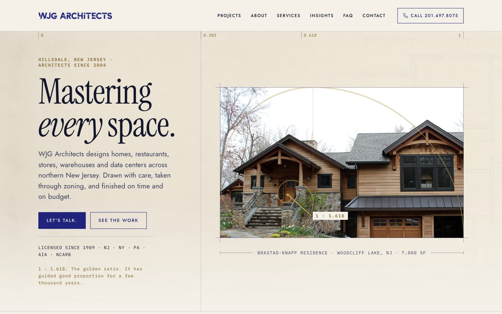
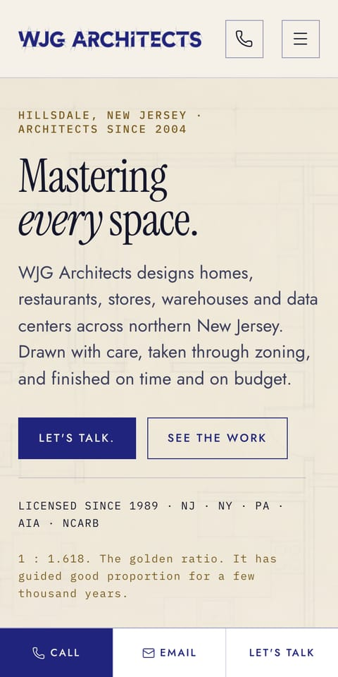

DIRECTION 01
Golden Section
The golden ratio, out in the open.
A bright, editorial page laid out on a 61.8 / 38.2 grid you can actually see. When it loads, the spiral draws itself over the Brastad house and settles on the front door. Further down, your five project types fill the first five squares of a golden rectangle.
- FEEL
- Bright paper and serif headlines
- GOLDEN RATIO
- Visible
- TRY THIS
- Hover a project. It turns back into a drawing.